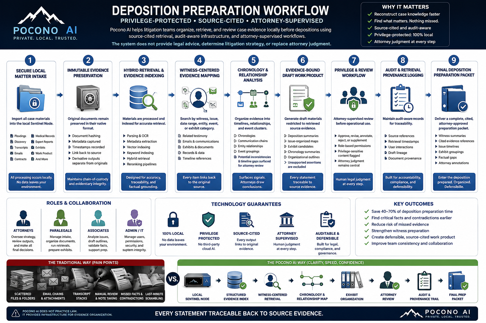

Regulated Workflows.
Local AI Assistance.
Human Oversight.
Pocono AI helps medical practices and law firms reduce administrative burden by retrieving evidence, organizing documentation, and preparing human-reviewable workflow outputs — while keeping sensitive data inside the client environment.
3-minute workflow read
The workflow promise: governed assistance before professional action.
This page is intentionally broad, but the pattern is simple: retrieve the right local evidence, create a reviewable draft, keep the human professional in control, and preserve the audit trail. The workflow changes by audience; the governance constraint does not.
Prior Authorization & Clinical Documentation Support
Independent practices spend significant time manually assembling documentation for prior authorizations, appeals, and payer reviews. Pocono AI assists clinical staff by retrieving supporting evidence from local records, organizing documentation, and preparing human-reviewable submission packets — all without transmitting protected health information to external AI providers.
Workflow steps — prior authorization & clinical documentation
Local processing boundary: Sensitive records remain inside the client environment during retrieval, indexing, and workflow preparation. PHI is not transmitted to external AI providers at any stage.
Workflow Inputs
- EHR chart notes
- Medication history
- Labs and diagnostic results
- Diagnoses and problem lists
- Payer criteria documentation
- Imaging reports
- Supporting clinical documentation
Workflow Outputs
- Structured evidence packet
- Documentation summary
- Submission-ready attachment checklist
- Human-reviewed workflow draft
- Follow-up tracking items
Audit Trail Support
- Retrieval traceability — source document logged per query
- Workflow event logging — every step recorded locally
- Human approval checkpoints — staff validation captured
- Review visibility — who reviewed what and when
- Source-aware output review — every output traceable to source
Operational impact — medical workflows
- Faster evidence retrieval across chart notes, labs, and diagnoses
- Reduced repetitive administrative burden on clinical staff
- Improved documentation consistency across payer submissions
- Human-reviewed outputs — no autonomous clinical decision-making
- Local processing architecture — PHI does not leave the facility
- Zero telemetry design philosophy — no data sent to external AI providers
Litigation Support & Evidence Retrieval
Legal professionals frequently spend significant time locating relevant documents, timelines, precedents, and supporting evidence across large internal datasets. Pocono AI assists firms by organizing locally stored legal materials into searchable knowledge systems capable of semantic retrieval, evidence summarization, and draft-support workflows — while maintaining internal data control.
Workflow steps — litigation support & evidence retrieval
Local processing boundary: Sensitive records remain inside the client environment during retrieval, indexing, and workflow preparation. Attorney-client privileged materials are never transmitted to external AI providers.
Workflow Inputs
- Pleadings and motions
- Discovery materials
- Contracts and agreements
- Correspondence and communications
- Transcripts and depositions
- Internal memos and case notes
- Prior filings and exhibits
Workflow Outputs
- Evidence summaries with source references
- Document references and chronology
- Chronology support materials
- Draft-support materials
- Deposition prep notes
- Attorney-reviewed work product
Audit Trail Support
- Retrieval traceability — every document retrieval logged locally
- Workflow event logging — all steps and queries recorded
- Human approval checkpoints — attorney validation captured
- Review visibility — who reviewed what and when
- Source-aware output review — every output traceable to case documents
Operational impact — legal workflows
- Faster document retrieval across large discovery and matter file sets
- Reduced paralegal search burden on routine document location tasks
- Improved case organization through local semantic indexing
- Citation-aware drafting support with traceable source provenance
- Human-reviewed legal outputs — attorney professional judgment preserved
- Attorney-client data remains local — privilege protected by architecture
![Pocono AI Sentinel Node legal workflow infographic. Local. Private. AI-Assisted. Attorney-Controlled. One Secure System. All Firm Knowledge. Instant Clarity. Seven-step unified workflow: (1) Ask in plain English, (2) Pocono AI Retrieves — Sentinel Node searches your firm's secure knowledge memory across all matters, documents, communications, (3) Source-Grounded Results with citations to exact sources, (4) Draft, Analyze and Compare — generate drafts, clauses, timelines, strategies, (5) Attorney Review and Edit — you review, edit, and refine the output, (6) Save to Matter Memory — approved work saved back into matter memory, (7) Audit and Accountability — every action logged, every source cited, every output verifiable and defensible. Designed around real legal workflow pain points. Current reality: Fragmented. Slow. Risky. The Pocono AI Way: one secure system, instant retrieval, lower risk, institutional knowledge that grows. Local by design. Private by default. Attorney Controlled. Built for the legal profession.](sentinel-node-legal-workflow-1x.png?v=402)
AI-Assisted. Attorney-Controlled. Local and Private by Design.
The hidden cost of fragmented legal information.
The problem isn't legal intelligence — it's fragmented information architecture. Scattered emails, disconnected systems, missing exhibits, multiple versions, lost context. Sentinel Node consolidates institutional knowledge retrieval, litigation timeline intelligence, and matter intake into one private, attorney-reviewed infrastructure.
See the full breakdown → Read research brief →Clinical Intelligence Briefing
Workflow
Local Only — Zero Telemetry
The Sentinel Node™ is designed to reduce clinician cognitive overload by preparing concise, auditable patient briefings entirely inside the client's local environment. The workflow emphasizes local inference, human review, zero telemetry architecture, and workflow-native assistance.
No patient data is transmitted to external AI providers at any stage. All retrieval, summarization, and output generation runs on hardware deployed within the practice environment.
Core Design Principles
Workflow Phases
- Review upcoming schedules
- Retrieve approved patient records
- Search prior visit notes
- Locate imaging reports
- Retrieve medication history
- Identify prior authorization status
- Detect incomplete documentation
- Organize relevant historical timelines
- Chief complaint and referral reason
- Recent symptom progression
- Surgeries and failed therapies
- Medication trials and admissions
- Prior authorization requirements
- Missing insurer documentation
- Clinical risk indicators and critical alerts
- Retrieve relevant internal chart data
- Surface supporting documentation
- Display provenance for all summaries
- Link generated statements to source records
- Prevent external transmission of PHI
- Draft structured visit notes
- Surface related records when requested
- Track missing documentation
- Prepare downstream workflows silently in the background
- Assemble prior authorization packets
- Organize supporting evidence
- Draft referral summaries
- Prepare insurance documentation
- Queue outputs for human review
- Clinician reviews all AI-prepared outputs
- Approves, edits, or rejects each item
- Authorizes submission to payers or downstream systems
- Final determination remains with licensed clinician
Nursing & Administrative Support
- Inbox triage assistance
- Referral organization
- Callback summarization
- Lab categorization
- Administrative workflow compression
Sentinel Node™ Workflow Sequence
Operational Philosophy. The Sentinel Node™ is not designed to replace clinicians. It is designed to reduce workflow friction by organizing information, retrieving relevant records, and preparing structured clinical context inside a secure local environment. The clinician remains the final decision-maker at every stage. No autonomous clinical determinations are made. No patient data is transmitted externally.
One Local Infrastructure Pattern.
Multiple Regulated Workflows.
The same secure local architecture can support multiple regulated workflows: ingest local documents, create searchable indexes, retrieve relevant evidence, assemble structured outputs, and route everything through professional review. Deployed once. Applicable across medical and legal workflows simultaneously.
Administrative Delays Have Real Human Costs
The workflow support Pocono AI provides exists because the status quo has measurable human consequences — delays in care, clinician burnout, and preventable complications.
![Infographic: Administrative Delays Have Real Human Costs. Three-column layout showing: The Current Reality (documentation hunting, payer portals, back-and-forth requests, denials and appeals, fax and manual tracking); The Costs Are Real (12 hours per week on prior auth per AMA, 93–95% of physicians say prior auth delays patient care, 78–82% report treatment delays, $250,000+ per year estimated cost per practice); and Pocono AI Workflow Support (Intake Detection, Evidence Retrieval, Criteria Matching, Packet Assembly, Human Review required, Submission Tracking). Bottom section: When Workflows Improve, Patients Benefit — More Time for Patients, Faster Responses, Fewer Delays in Care, Reduced Burnout, Better Outcomes Possible. Local AI. Zero Telemetry. Built for Regulated Workflows. Human-in-the-loop by design.](infographic-administrative-delays-desktop.png?v=402)
Sources: AMA Prior Authorization Survey (2024), MGMA 2024, KLAS Research, industry studies, and peer-reviewed medical literature. *Actual costs vary by practice size, specialty, and payer mix.
Deposition Preparation,
Reconstructed
Local Only — Zero Telemetry
Privilege-Protected · Source-Cited · Attorney-Supervised
Pocono AI helps litigation teams organize, retrieve, and review case evidence locally before depositions using source-cited retrieval, audit-aware infrastructure, and attorney-supervised workflows. Every output is evidence-bound and traceable to its source document.
No case materials are transmitted to third-party cloud AI providers. Inference, retrieval, chronology analysis, and work product drafting occur entirely on hardware deployed inside your environment. The system does not provide legal advice, determine litigation strategy, or replace attorney judgment.
Workflow Overview
![Deposition Preparation Workflow infographic: nine-stage litigation support workflow covering Secure Local Matter Intake, Tamper-Evident Evidence Preservation, Hybrid Retrieval and Evidence Indexing, Witness-Centered Evidence Mapping, Chronology and Relationship Analysis, Evidence-Bound Draft Work Product, Privilege and Review Workflow, Audit and Retrieval Provenance Logging, and Final Deposition Preparation Packet. Includes roles and collaboration breakdown for attorneys, paralegals, associates, and admin. Technology guarantees: 100% local, privilege protected, source-cited, attorney supervised, auditable and defensible. Comparison of traditional workflow pain points versus Pocono AI approach. Footer: Every statement traceable back to source evidence.](deposition-prep-workflow.png)
Example deposition preparation workflow using privilege-protected local retrieval and attorney-supervised evidence organization. Every statement traceable to source evidence.

Nine-Stage Workflow Breakdown
All case materials — pleadings, discovery, transcripts, exhibits, emails, contracts — are imported directly into the local Sentinel Node. No data leaves your environment at any stage.
Original documents remain preserved in their native format with document hashing, metadata capture, and timestamp recording. Derivative outputs are kept separate from originals, maintaining chain-of-custody and evidentiary integrity.
Materials are processed through parsing, OCR, metadata extraction, vector indexing, keyword indexing, hybrid retrieval, and reranking pipelines — designed for accuracy, traceability, and factual grounding.
Search by witness, issue, date range, entity, event, or exhibit category. Related testimony, emails, exhibits, records, and timeline references are surfaced — every item linking back to the original source document.
Evidence is organized into timelines, communication chains, entity relationships, event groupings, and potential inconsistencies. Signals surface; attorneys draw conclusions.
Draft materials — deposition summaries, issue-organized maps, exhibit candidates, chronology summaries, organizational outlines — are generated exclusively from retrieved source evidence. Unsupported assertions are excluded. Every statement is traceable to source.
Attorney-supervised review before any operational use. Approve, revise, annotate, reject, or supplement. Role-based permissions, privilege-sensitive content flagging, and attorney judgment remain central throughout. Human legal judgment at every step.
Append-only audit records maintained locally for full traceability: source references, retrieval timestamps, user interactions, draft lineage, document provenance. Built for accountability, compliance, and defensibility.
A complete, cited, attorney-approved preparation packet: witness summaries, cited evidence references, issue timelines, exhibit groupings, factual gaps, and attorney annotations. Enter the deposition prepared. Organized. Defensible.
Traditional Deposition Preparation vs. Pocono AI
Traditional Workflow — Pain Points
- Scattered PDFs and disconnected file folders
- Email chains with unindexed attachments
- Transcript stacks requiring manual review
- Manual chronology reconstruction and note-taking
- Last-minute exhibit scrambling
- Missed facts and contradictions under time pressure
Pocono AI — Infrastructure Approach
- Local Sentinel Node — structured evidence index
- Witness-centered retrieval with source citations
- Structured chronology and relationship mapping
- Attorney-supervised review at every output stage
- Audit-aware infrastructure with provenance trail
- Evidence traceability — every statement cited
Infrastructure Governance
How the system is designed
Designed Outcomes
- Reconstruct case knowledge faster across large document sets
- Surface relevant facts and contradictions earlier in preparation
- Reduce risk of missed evidence under deposition time pressure
- Strengthen witness preparation with source-cited evidence maps
- Create defensible, cited work product with full retrieval provenance
- Improve team consistency and preparation across all litigation staff
Human-in-the-Loop Safeguards
Pocono AI systems are designed to assist licensed professionals, not replace them. Outputs require professional review before entering any clinical record, legal filing, or operational workflow. The system does not independently diagnose, practice medicine, provide legal advice, or make final determinations.
Final authority remains with the responsible clinician, attorney, or authorized staff member in every workflow. AI assists with retrieval, synthesis, and draft preparation. Humans decide.
- No autonomous clinical decisions
- No autonomous legal advice
- No unsupervised submission
- Professional review required at every output stage
- Local audit trails support accountability
All AI interactions are logged in an append-only, reviewable local audit record (SHA-256 hash-chaining is the Stage 2 audit-layer). Source provenance is recorded for every retrieved document. The audit log remains on-premises under the organization's control. See Audit System and AI Governance for technical detail.
Restore the Patient Narrative
Physicians should spend their time thinking clinically — not reconstructing fragmented histories across disconnected systems. Modern healthcare records are scattered across portals, scanned PDFs, faxed notes, specialist systems, and disconnected timelines. Significant portions of appointments are consumed reconstructing longitudinal patient histories before meaningful clinical reasoning can even begin.
![Healthcare workflow infographic comparing fragmented chart reconstruction versus Pocono AI Sentinel Node retrieval-assisted review. Before workflow shows 34.8 minute average physician reconstruction time across multiple portals, scanned PDFs, faxes, and disparate systems. After workflow shows 8.6 minute average physician review time using locally indexed records, natural language clinical queries, hybrid retrieval and reranking, evidence-linked cited results, and physician final decision authority. Operational impact: 26.2 minutes saved per complex patient chart reconstruction, approximately 3.5 physician hours per day reclaimed at 8 complex patients per day. All processing local, zero telemetry, fully auditable, human-in-the-loop.](chart-reconstruction-workflow-v1.png)
Pocono AI's Sentinel Node workflow is designed to reduce operational fragmentation through local retrieval, evidence-linked retrieval, retrieval reranking, human-in-the-loop review, timeline-assisted longitudinal review, and zero-telemetry infrastructure.
Not replacing physician judgment.
Restoring it.
Interested in retrieval-assisted workflows for independent practices? Pocono AI is currently exploring pilot opportunities with select clinics and healthcare organizations.
Discuss a PilotTechnical Workflow Simulation Summary
How we modeled this. Pocono AI conducted a simulated workflow analysis to measure the operational burden of reconstructing fragmented patient histories.
- 24 simulated physician workflows across 8 specialties
- 80–450 pages per patient across 3–7 sources (EMRs, PDFs, faxes, imaging, labs, notes, referrals)
- Measured: time, navigation burden, source switching, repetition, reconciliation, contradictions
Baseline (Traditional Workflow)
Mean: 34.8 min | σ: 11.2 min
±2σ Range: 12.4–57.2 min
Sentinel Node (Simulated)
Mean: 8.6 min | σ: 3.1 min
±2σ Range: 2.4–14.8 min
Important limitations. This is a workflow simulation model designed to estimate operational burden and retrieval-assisted review efficiencies. This is NOT a clinical trial, medical advice, or production real-world outcome study. Full details available on request.
Pilot Evaluation Focus
Initial pilot discussions typically focus on understanding your current administrative environment and identifying where local AI assistance can deliver measurable value.
- Workflow bottlenecks and highest-friction administrative tasks
- Administrative burden — time lost to documentation and retrieval
- Retrieval speed — how long it takes to find supporting evidence
- Local deployment requirements and infrastructure compatibility
- Integration feasibility with existing EHR or practice management systems
- Human review processes — who validates outputs and how
- Measurable time savings targets and baseline metrics
- Documentation consistency across payer submissions or case materials
Additional Workflow Areas Under Evaluation
These workflow areas are under active evaluation for future development. No commitments are made. Language reflects areas of interest, not currently available features.
Medical — Under Evaluation
- Denial management and appeal support
- Referral processing and documentation
- Chart summarization workflows
- Intake documentation assistance
- Quality reporting support
Legal — Under Evaluation
- Contract analysis support
- Deposition preparation — see workflow above ↑
- Document chronology support
- Discovery review support
- Internal case memo preparation
Pilot Program
Interested in piloting a local AI workflow?
Pocono AI is currently evaluating pilot opportunities with medical practices and law firms that want to reduce administrative burden while keeping sensitive data inside their own environment.
Why Local AI — Core Concepts